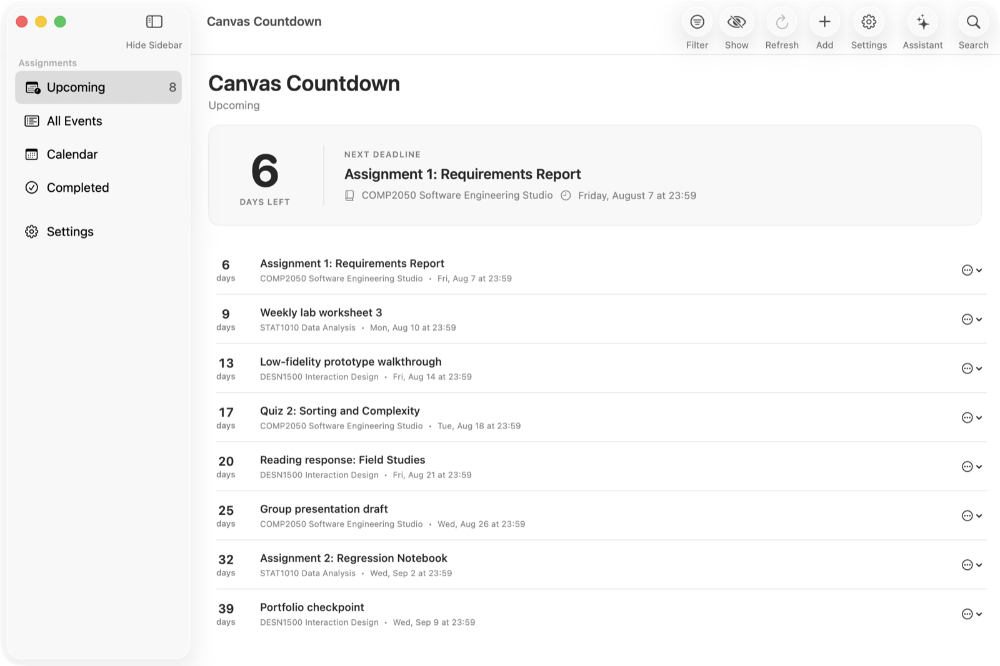
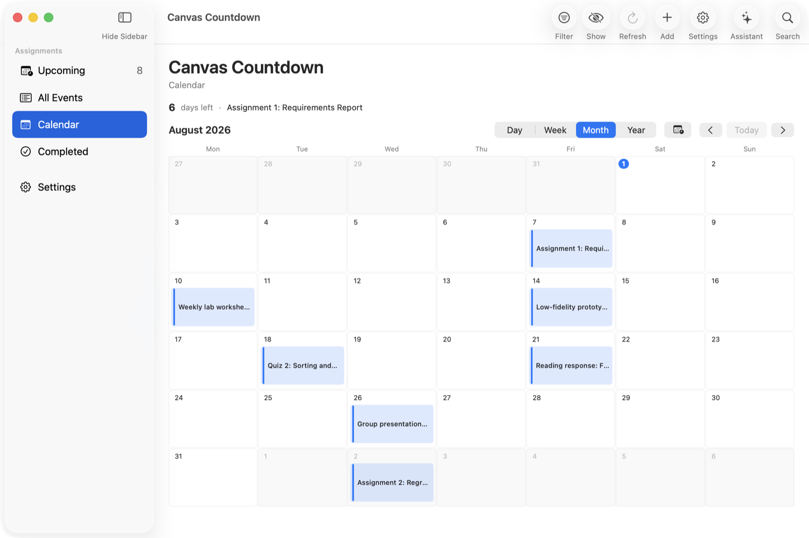
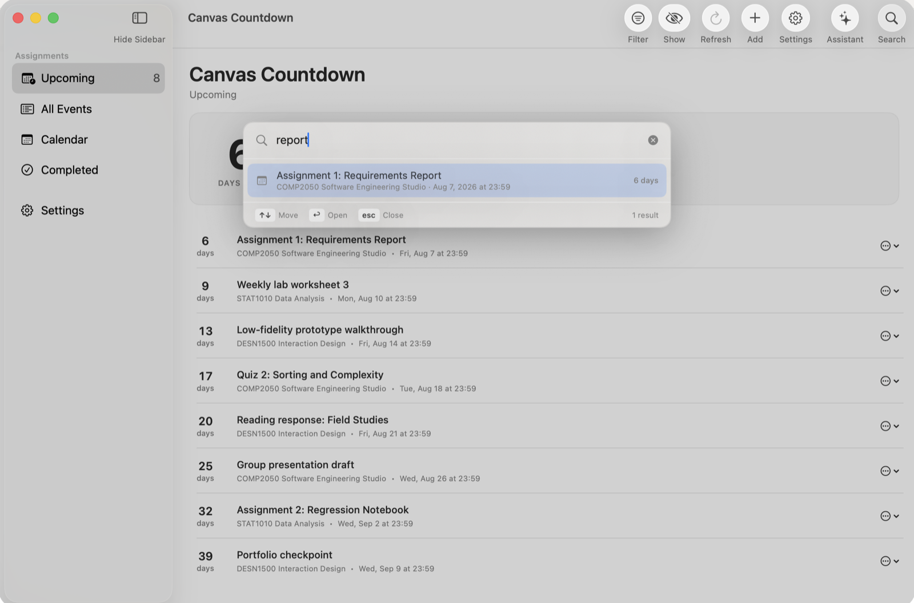
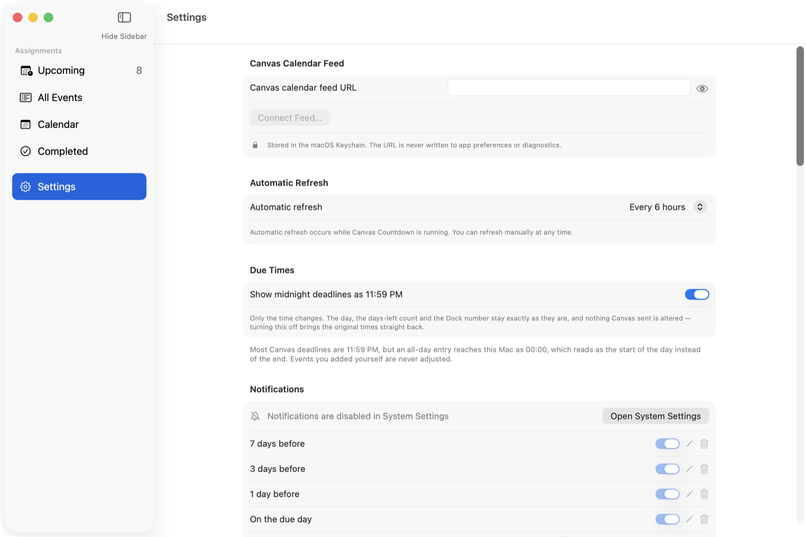

For macOS
Canvas Countdown reads the calendar feed your university already publishes and draws the days remaining onto the Dock icon — so you know where you stand without opening anything.
Move across this area — the Dock theme follows your pointer. The four themes are the app's own.
Watch
Type what you have to do. The optional assistant turns it into drafts you review before anything is written — and if it gets one wrong, you say so rather than starting again. Nothing is saved until you confirm, and the confirmation counts what it is about to add.
What it does
Assignments arrive from your Canvas feed and are listed with the days remaining beside each one, nearest first.
Deadlines that arrive as 00:00 are shown as 11:59 PM, because that is what they mean. Only the clock is corrected — the day and the countdown never move, and turning the setting off restores the original times.

Day, week, month and year, with today marked. Type a date to jump to it.

A panel in the middle of the screen, the way Spotlight works. It looks through every assignment, not only the section on screen.

Paste your Canvas feed URL and it refreshes on its own. Reminders fire at the offsets you choose. Courses the feed added by mistake can be removed for good, and your own colour-coded labels stay on an event between launches.

Reversible
Saving several tasks at once asks first, and says what it is about to do. Afterwards a panel offers Undo for ten seconds — then it moves to the Edit menu, so you never have to know a keyboard shortcut to take something back.
How it compares
A countdown app will show a countdown. The question is whether you had to type in fifty of them yourself, and whether they update when the unit outline changes.
| Canvas Countdown | TickTick | Days Matter | Apple Calendar | |
|---|---|---|---|---|
| Where the deadlines come from | Your Canvas feedpasted once, refreshes itself | Calendar subscriptiona Premium feature | Typed in by handone event at a time | Your Canvas feedfree, read-only events |
| Days left on the Dock icon | Yesstraight from the feed | Nothe badge counts tasks, not days | Yesfor events you entered yourself | Noshows today's date |
| Turns one sentence into several tasks | Yesreviewed before saving | Yescloud, third-party AI providers | No | One eventnatural language, no splitting |
| Can work without sending anything out | Yesoptional local model; deadlines stay on the Mac | Nocloud sync; AI goes to third parties | Partlynative app, but sync is via iCity | Partly“On My Mac” calendars; the feed still needs the network |
| Built around coursework | Yescourses, labels, 11:59 PM | General to-do app | General countdowns | General calendar |
| Price | Freeopen source, MIT | FreemiumPremium ~US$35.99/yr promo, list US$49.99 | US$0.99one-time, Mac App Store | Included with macOS |
Checked August 2026 against each app's own documentation and store listing. TickTick has had a Countdown feature since 2025 and AI since 2026 — the rows above are about where the countdown lives and where the AI runs, not whether they exist. Days Matter syncs its own events out to iCal rather than subscribing to a feed. The free Days Matter product is the separate iPhone app, Days Matter Air. If anything here has gone out of date, tell me and I will correct it. TickTick, Days Matter and Apple Calendar are trademarks of their respective owners; the marks above are drawn here, not their logos.
Worth knowing about the feed itself, whichever app reads it: Canvas publishes events and assignments but not To Do items, covers about 366 days ahead and 30 behind, and caps the file at 1,000 items. That applies to Canvas Countdown as much as to anything else.
Installing
The build is signed ad-hoc rather than notarized by Apple, which costs a developer account.
Needs macOS 14 (Sonoma) or later. macOS 13 and earlier cannot run it: the app is built on SwiftData and Observation, which Apple ships only from macOS 14.
Privacy
Get in touch
Found a bug, want a feature, or interested in working together?